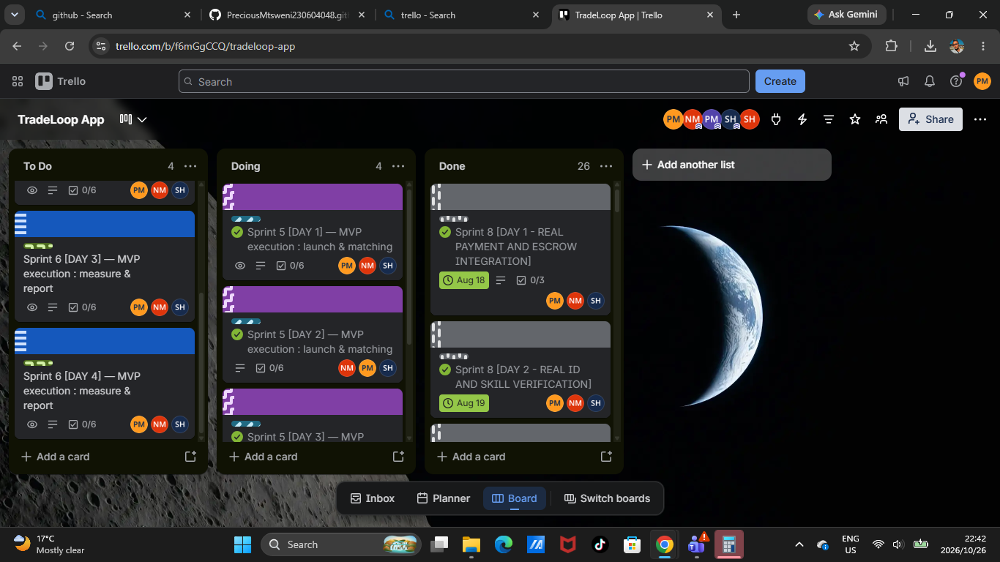

- What happened
- Deliverable 2 planning session. We agreed a three-sprint structure and assigned ownership: Precious (executive summary and financials), Ntombenhle (implementation plan), Stephan (design and pitch deck visuals).
- Present
- Precious, Ntombenhle, Stephan.
About this portfolio
What it is, how to read it, and where each marking criterion is.
This page extends my existing digital portfolio. It follows the four steps of an e-portfolio: Collect (gather artefacts), Select (choose the strongest evidence), Reflect (explain what I learned) and Connect (link everything together). The business idea is TradeLoop, a hyperlocal, Android-first, low-data marketplace that connects households in Khayelitsha Site C with verified, rated local workers for small jobs. We built it first as a web application.
The page draws on household-services and labour-force data (Ipsos South Africa, 2023; Statistics South Africa, 2024) and on our own community survey of 21 residents (TradeLoop Group, 2026b).
How the four steps appear on this page
- Collect. The artefacts are listed below and shown as the evidence in each section.
- Select. Each reflection starts with why I chose that evidence.
- Reflect. Each reflection says what I learned and what I would change.
- Connect. Each reflection ends with how it links to the next artefact, and the Connect section pulls everything together.
Where to find each marking criterion
| Criterion | Evidence (10%) | Reflection (10%) |
|---|---|---|
| Agile team charter | Go to evidence | Go to reflection |
| User stories and tasks | Go to evidence | Go to reflection |
| Product backlog | Go to evidence | Go to reflection |
| Sprint backlog | Go to evidence | Go to reflection |
| Agile logbook | Go to evidence | Go to reflection |
Collect: supporting evidence from earlier work
| Artefact | Format | Date | Used in |
|---|---|---|---|
| Deliverable 1: Community Problem + Opportunity Validation | Survey of 21 residents, 10 to 12 March 2026 | User stories | |
| Deliverable 2: Marketing Strategy, Feasibility and MVP | Word | 24 May 2026 | Product backlog, sprint backlog |
| Interactive TradeLoop prototype | Website | 2026 | Logbook |
| Live TradeLoop web app | Web app | 2026 | Product backlog, logbook |
| Trello board screenshot and live Trello board | Image and board | 4 May to 26 October 2026 | Sprint backlog, logbook |
The group work in Professional Practice 3 is used as source material. The reflections on this page are my own individual work.
1. Agile team charter
The team's agreement on purpose, values, working rules and boundaries.
Evidence
Team: TradeLoop Team (Group 6). Product: TradeLoop, The Daily Micro-Skill Marketplace.
Shared purpose: to help Khayelitsha households find trusted local workers quickly, and to give informally skilled workers a steady, fair way to earn.
Product vision:
For skilled workers and households in underserved communities who struggle to find trusted, affordable help for everyday tasks, TradeLoop is a real-time, verified, hyperlocal marketplace that delivers daily income and trusted help with zero friction.
Roles
| Team member | Project role | Agile role | Responsibility |
|---|---|---|---|
| Precious L Mtsweni | Team Leader / Presenter | Product Owner and Scrum Master | Owns priorities, runs stand-ups, manages deadlines, prepares demos |
| Ntombenhle Majali | Writer / Editor | Team Member | Documentation, editing, referencing |
| Stephan Hendricks | Designer | Team Member | Branding, visuals, layout, prototype look and feel |
| Everyone | Researcher | Team Members | Survey design, data collection, worker recruitment |
Team values
- Trust. We protect households and workers.
- Community first. Decisions start with Khayelitsha users.
- Transparency. We share progress and blockers.
- Respect. Every idea is heard.
- Accountability. We deliver what we commit to.
Working agreements
- One-week sprints, with planning at the start and a review and retrospective at the end.
- Short stand-ups Tuesday to Friday on WhatsApp, with extra check-ins on weekends when there was a lot to do, calls when needed, and in person on presentation days. Each person answers three questions: What did I do? What will I do? What is blocking me?
- Tasks are tracked on Trello and updated the same day. Files are saved to GitHub.
- Team messages get a reply within 24 hours.
Definition of Done
A task is done when it is completed, checked by a teammate, and saved or uploaded to the shared folder or GitHub.
Boundaries and conflict resolution
Work is only assigned after agreement in planning. Disagreements are raised at the stand-up first, then decided by the Product Owner. Missed deadlines are reported early.
Reflection
Why I chose this evidence. The charter is the first artefact we made, and everything else depends on it. It names who owns the backlog, how we run stand-ups and what counts as done. It also shows how we split research, writing, design and presenting across Deliverable 1 and Deliverable 2.
What I learned. A team needs shared rules before any work begins. Stating our purpose and values kept us focused on helping Khayelitsha residents and workers, not only on producing documents. This matches the Agile value of putting individuals and interactions before processes and tools (Beck et al., 2001). When we disagreed about building a mobile app or a web application, we settled it by comparing the free resources each option gave us, not by preference. We chose the web application. I will keep that habit of deciding on evidence.
What I would do differently. I would agree the working agreements in the first meeting and review them every sprint. I also held both the Product Owner and Scrum Master roles. The Scrum Guide treats these as separate accountabilities (Schwaber and Sutherland, 2020), so in a larger team I would share them, so that the person who sets priorities is not also the one checking the process.
How it connects. The charter sets the rules for the user stories, the two backlogs and the logbook that follow.
2. User stories and tasks
What users need, written from their point of view and broken into tasks.
Evidence
Each story is written from the end user's view, using the "As a ... I want ... so that ..." format (Cohn, 2004). The stories are based on our community survey of 21 residents (TradeLoop Group, 2026b):
- 43%valued worker verification most
- 33%valued community ratings
- 62%took more than an hour to find help
| ID | User story | Tasks |
|---|---|---|
| US1 | As a household member, I want to post a small job with a budget and time, so that I can get help quickly. |
|
| US2 | As a household member, I want to see a worker's verified ID, badges and ratings, so that I can trust who enters my home. |
|
| US3 | As a worker, I want to create a verified profile with my skills and photo, so that I look like a professional and get more jobs. |
|
| US4 | As a worker, I want to see nearby jobs and claim one, so that I can earn on days I would have no work. |
|
| US5 | As a household member, I want my payment held until the job is done, so that I am protected if the work is poor. |
|
| US6 | As a user with limited data, I want a low-data mode, so that I can use the app without spending my airtime. |
|
| US7 | As a household member or worker, I want to rate the other person after a job, so that the community stays accountable. |
|
| US8 | As an isiXhosa speaker, I want the app in my language, so that I can use it with confidence. |
|
Reflection
Why I chose this evidence. I chose these eight stories because they came straight from our survey results, so each one can be defended with data (TradeLoop Group, 2026b).
What I learned. Writing user stories forced me to think about TradeLoop from the point of view of our personas, Nomsa and Lungelo, and not from a developer's point of view. A good story says why a feature matters, not only what it is, and the "so that" part is where that happens (Cohn, 2004). Breaking each story into small tasks made the work easier to share between team members. The hardest part was that one story needed more tasks on the website than on mobile. The trade request flow had extra steps, and the mobile navigation did not carry over to a desktop layout, so we rethought it from scratch.
What I would do differently. I would add a short acceptance check to each story, so the team knows exactly how to test that it works before calling it done.
How it connects. These stories feed directly into the product backlog, where I prioritised them.
3. Product backlog
Every item the product needs, in priority order.
Evidence
The backlog is prioritised with MoSCoW: Must, Should and Could (Agile Business Consortium, no date). Effort is in story points, from 1 (very small) to 8 (large). It holds 12 items worth 63 points: Must 21, Should 26 and Could 16.
| # | Item | Story | Priority | Points | Sprint |
|---|---|---|---|---|---|
| 1 | Worker sign-up form and manual verification | US3 | Must | 5 | 1 |
| 2 | Consumer WhatsApp flyer (isiXhosa and English) | US1, US8 | Must | 3 | 1 |
| 3 | Worker profile with ID badge and rating | US2 | Must | 5 | 2 |
| 4 | Post-a-job form | US1 | Must | 5 | 2 |
| 5 | Manual matching process and feedback form | US4 | Must | 3 | 2 |
| 6 | Two-way ratings and reviews | US7 | Should | 5 | 3 |
| 7 | Job feed with location filter | US4 | Should | 8 | 3 |
| 8 | Low-data mode | US6 | Should | 5 | 4 |
| 9 | In-app escrow payment | US5 | Should | 8 | 4 |
| 10 | isiXhosa language support | US8 | Could | 3 | 4 |
| 11 | Verified badge subscription (R99/month) | US3 | Could | 5 | Later |
| 12 | Business bundles for recurring tasks | US1 | Could | 8 | Later |
| Total | 63 | ||||
Priority logic. The supply side comes first. Deliverable 2 identified the chicken-and-egg problem and planned to sign up 20 to 30 verified workers before opening to consumers.
How the backlog changed. At the sprint review on 14 August 2026 we agreed to bring real payment and escrow, then real ID and skill verification, into the next sprint. Both were marked Done on Trello, on 18 and 19 August 2026 (see the logbook).
Reflection
Why I chose this evidence. This backlog shows decision-making, not only a list of features.
What I learned. Prioritising the backlog was harder than writing it, because every feature felt important. I used our survey and our feasibility risks to decide. Trust features and worker recruitment are Must-haves, while subscriptions and business bundles can wait. The biggest trade-off was web application versus mobile app. We chose the web application for its free resources, which moved the Android build down the backlog. In August we brought real payment and escrow and real ID and skill verification forward, because trust was what our survey said matters most. A backlog is a living document that changes as the team learns (Schwaber and Sutherland, 2020).
What I would do differently. I would record the date and reason for every re-prioritisation on the backlog itself. Right now that story is only in the logbook.
How it connects. The top items on this backlog become the sprint backlog, which takes the first sprint's items and breaks them into tasks.
4. Sprint backlog
The plan for one sprint: a goal, the work chosen for it, and who does what.
Evidence
Sprint 1 goal: recruit and verify the first 25 workers and prepare the consumer WhatsApp flyer, so the concierge MVP can start in Weeks 1 and 2.
Sprint length: one week. Sprint 1 started on Monday 4 May 2026. The series of sprints ran from 4 May to 26 October 2026 and was tracked on Trello. Committed work: 8 points (backlog items 1 and 2).
| Task | Backlog item | Owner | Points | Outcome |
|---|---|---|---|---|
| Create Google Form for worker details (name, photo, ID, skills, availability) | 1 | Precious | 1 | Done |
| Set up WhatsApp group for the worker directory | 1 | Precious | 1 | Done |
| Visit taxi ranks and spaza shops to recruit workers | 1 | Everyone | 2 | Carried over |
| Check IDs and build the verified worker list | 1 | Ntombenhle | 1 | Carried over |
| Design the one-page flyer (isiXhosa and English) | 2 | Stephan | 1 | Done |
| Proofread flyer text and references | 2 | Ntombenhle | 1 | Done |
| Share flyer in community, church and school groups | 2 | Everyone | 1 | Done |
| Total committed | 8 | |||
Sprint success measure (from Deliverable 2): at least 25 workers in the directory by the end of Week 1.
Result. By the retrospective on 21 August 2026, 13 worker profiles had been created, which is 52% of the target of 25. The recruitment work carried over into later sprints.

Reflection
Why I chose this evidence. The sprint backlog turned the big product backlog into a small plan we could actually finish in a week. I chose a goal that matched our MVP plan, so the sprint had a clear measure of success.
What I learned. Assigning owners made it easier to see who was responsible for each task. The result was honest: 13 profiles against a target of 25, so recruitment carried over, and later sprints are tracked on Trello. A sprint goal should be small enough to be realistic, because it is the single objective the team commits to for the sprint (Schwaber and Sutherland, 2020).
What I would do differently. I would set the worker target from how many people we actually signed up in the first days, not from a fixed number chosen before we started.
How it connects. The sprint backlog connects to the logbook, where the stand-ups and the retrospective show whether the plan worked.
5. Agile logbook
A record of stand-ups, planning, review and retrospective, kept as we worked.
Evidence
The full weekly logbooks are Word documents (TradeLoop Group, 2026a):
Below are the entries I selected because together they show the full sprint cycle: planning, stand-ups, review and retrospective.
- Done
- Stephan built the Client/Worker toggle and the guide panel layout. I drafted the onboarding and job-posting walkthrough steps with jump buttons.
- Next
- Finish the remaining steps, add a search bar, and write tips on ID verification and escrow.
- Blockers
- The new highlighting must not break the existing navigation. Stephan tested every jump button.
- Done
- Finished the trade request flow for the website prototype, linked all pages, and tested on a few screen sizes.
- Next
- Walk through it with my teammate and fix spacing.
- Blockers
- Some pages look cramped on small windows. We have not decided whether to test the website separately from the mobile prototype.
- Done
- Finished the light/dark toggle (it persists and cross-fades), added the logo to the nav, footer and favicon, and started the Brand & UI Guide.
- Next
- Finish the guide and start a progress deck.
- Blockers
- Mapping the client and worker flows step by step took longer than expected.
- What happened
- The website and the app prototype were still two separate files. The priority was to connect "Post a Job" and "Sign up to earn" to the app prototype and move towards a real account system.
- Next sprint
- Real payment and escrow, then real ID and skill verification, and lining up Khayelitsha clients and workers to test.
- Went well
- Real payment and escrow integration (18 August) and real ID and skill verification (19 August) are Done on Trello. 13 worker profiles were created.
- To improve
- MVP launch and matching is still in progress and measure-and-report has not started. 13 profiles is below the target of 25.
- Action
- Finish the matching days, then measure and report, and update Trello daily instead of relying on WhatsApp.
Reflection
Why I chose this evidence. These entries show the full sprint cycle, from planning to retrospective.
What I learned. Keeping a logbook made our progress visible and honest. The stand-up notes showed me where we were stuck, and the retrospective gave us a chance to improve how we worked, not only what we produced (Schwaber and Sutherland, 2020). The retrospective showed that we should have started referencing earlier and used a shared task board more consistently instead of relying on WhatsApp, so our later sprints are tracked on Trello. Building the website also taught me that something can look finished but not actually work, so I now test what I build and do not only look at it. Small, regular records are more useful than one big report at the end.
What I would do differently. Our stand-ups were written on WhatsApp, which was flexible but easy to skip. The Scrum Guide describes the daily event as 15 minutes at the same time each day (Schwaber and Sutherland, 2020). I would keep the short written format but fix a daily time.
How it connects. The logbook tests the charter's working agreements, shows progress on the sprint backlog and gives evidence for re-prioritising the product backlog.
Connect: how it all fits together
One cycle, five artefacts.
The charter set the rules and roles. The survey-based user stories described what users need. The product backlog ranked those needs, the sprint backlog turned the top items into a one-week plan, and the logbook recorded what happened and what we learned. Each retrospective feeds back into the backlog, which is the Agile cycle in practice.
Each retrospective in the logbook feeds back into the product backlog.
Project timeline
- Community survey of 21 residents in Khayelitsha Site C (Deliverable 1).
- First weekly logbook begins.
- Planning session. We agree a three-sprint structure and assign owners.
- Sprint 1 starts: recruit the first 25 workers and prepare the consumer flyer.
- Deliverable 2: Marketing Strategy, Feasibility and MVP.
- Prototype stand-ups: guide panel, trade request flow, light/dark toggle, Brand & UI Guide.
- Sprint review. Next sprint: real payment and escrow, then real ID and skill verification.
- Payment and escrow (18 August) and ID and skill verification (19 August) are Done on Trello.
- Retrospective: 13 worker profiles against a target of 25.
- Portfolio assessment window for Project Presentation 3. The tracked sprint series ends on 26 October.
Overall reflection
Over this project I moved from writing documents to building and documenting a product. I learned to wire a mobile menu so it actually works, build a persistent light/dark toggle, write a Brand and UI Guide, and present my own work to the team. Planning in sprints, tracking on Trello and holding stand-ups taught me to break big goals into small, testable steps. Leading a three-person team taught me to test what I build instead of only making it look finished.
References
Harvard style.
Agile Business Consortium (no date) What is MoSCoW prioritization? Available at: https://www.agilebusiness.org/resource/video-mastering-moscow-prioritisation.html (Accessed: 5 November 2026).
Beck, K. et al. (2001) Manifesto for Agile Software Development. Available at: https://agilemanifesto.org/ (Accessed: 5 November 2026).
Cohn, M. (2004) User stories applied: for Agile software development. Boston: Addison-Wesley.
Ipsos South Africa (2023) Household Services Survey 2023. Cape Town: Ipsos.
Schwaber, K. and Sutherland, J. (2020) The Scrum Guide: the definitive guide to Scrum: the rules of the game. Available at: https://scrumguides.org/docs/scrumguide/v2020/2020-Scrum-Guide-US.pdf (Accessed: 5 November 2026).
Statistics South Africa (2024) Quarterly Labour Force Survey, Quarter 3: 2024. Pretoria: Statistics South Africa.
TradeLoop Group (2026a) TradeLoop Agile Logbooks, 23 April to 21 August 2026 [Word documents]. Cape Town: Cape Peninsula University of Technology.
TradeLoop Group (2026b) TradeLoop Community Survey [Google Form]. Conducted 10 to 12 March 2026, Khayelitsha Site C, Cape Town.
Back to the top of the page